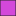

<!doctype html>
<html lang="en">
    <head>
        <meta charset="utf-8">
        <meta http-equiv="X-UA-Compatible" content="IE=edge">
        <meta name="viewport" content="initial-scale=1,user-scalable=no,maximum-scale=1,width=device-width">
        <meta name="mobile-web-app-capable" content="yes">
        <meta name="apple-mobile-web-app-capable" content="yes">
        <link rel="stylesheet" href="css/leaflet.css">
        <link rel="stylesheet" href="css/qgis2web.css"><link rel="stylesheet" href="css/fontawesome-all.min.css">
        <link rel="stylesheet" href="css/leaflet-search.css">
        <style>
        #map {
            width: 609px;
            height: 540px;
        }
        </style>
        <title></title>
    </head>
    <body>
        <div id="map">
        </div>
        <script src="js/qgis2web_expressions.js"></script>
        <script src="js/leaflet.js"></script>
        <script src="js/leaflet.rotatedMarker.js"></script>
        <script src="js/leaflet.pattern.js"></script>
        <script src="js/leaflet-hash.js"></script>
        <script src="js/Autolinker.min.js"></script>
        <script src="js/rbush.min.js"></script>
        <script src="js/labelgun.min.js"></script>
        <script src="js/labels.js"></script>
        <script src="js/leaflet-search.js"></script>
        <script src="data/NL_EB_Poly_50k_Upload_0.js"></script>
        <script>
        var highlightLayer;
        function highlightFeature(e) {
            highlightLayer = e.target;

            if (e.target.feature.geometry.type === 'LineString') {
              highlightLayer.setStyle({
                color: '#ffff00',
              });
            } else {
              highlightLayer.setStyle({
                fillColor: '#ffff00',
                fillOpacity: 1
              });
            }
        }
        var map = L.map('map', {
            zoomControl:true, maxZoom:28, minZoom:1
        }).fitBounds([[42.736271590650716,-78.0766265369258],[62.032203723275636,-36.19940982836336]]);
        var hash = new L.Hash(map);
        map.attributionControl.setPrefix('<a href="https://github.com/tomchadwin/qgis2web" target="_blank">qgis2web</a> &middot; <a href="https://leafletjs.com" title="A JS library for interactive maps">Leaflet</a> &middot; <a href="https://qgis.org">QGIS</a>');
        var autolinker = new Autolinker({truncate: {length: 30, location: 'smart'}});
        var bounds_group = new L.featureGroup([]);
        function setBounds() {
        }
        function pop_NL_EB_Poly_50k_Upload_0(feature, layer) {
            layer.on({
                mouseout: function(e) {
                    for (i in e.target._eventParents) {
                        e.target._eventParents[i].resetStyle(e.target);
                    }
                },
                mouseover: highlightFeature,
            });
            var popupContent = '<table>\
                    <tr>\
                        <th scope="row">DIST_NAME</th>\
                        <td>' + (feature.properties['DIST_NAME'] !== null ? autolinker.link(feature.properties['DIST_NAME'].toLocaleString()) : '') + '</td>\
                    </tr>\
                    <tr>\
                        <td colspan="2">' + (feature.properties['LIB'] !== null ? autolinker.link(feature.properties['LIB'].toLocaleString()) : '') + '</td>\
                    </tr>\
                    <tr>\
                        <td colspan="2">' + (feature.properties['PC'] !== null ? autolinker.link(feature.properties['PC'].toLocaleString()) : '') + '</td>\
                    </tr>\
                    <tr>\
                        <td colspan="2">' + (feature.properties['NDP'] !== null ? autolinker.link(feature.properties['NDP'].toLocaleString()) : '') + '</td>\
                    </tr>\
                    <tr>\
                        <td colspan="2">' + (feature.properties['OTH'] !== null ? autolinker.link(feature.properties['OTH'].toLocaleString()) : '') + '</td>\
                    </tr>\
                </table>';
            layer.bindPopup(popupContent, {maxHeight: 400});
        }

        function style_NL_EB_Poly_50k_Upload_0_0(feature) {
            switch(String(feature.properties['CASE
   WHEN LIB > PC AND LIB > NDP AND LIB > OTH THEN color_rgb(255,0,0)
   WHEN PC > LIB AND PC > NDP AND PC > OTH THEN color_rgb(65,105,255)
   WHEN NDP > LIB AND NDP > PC AND NDP > OTH THEN color_rgb(255,69,0)
   WHEN OTH > LIB AND OTH > PC AND OTH > NDP THEN color_rgb(179,196,222)
ELSE color_rgb(176,196,223)
END'])) {
                case '176,196,223':
                    return {
                pane: 'pane_NL_EB_Poly_50k_Upload_0',
                opacity: 1,
                color: 'rgba(35,35,35,1.0)',
                dashArray: '',
                lineCap: 'butt',
                lineJoin: 'miter',
                weight: 1.0, 
                fill: true,
                fillOpacity: 1,
                fillColor: 'rgba(255,255,255,1.0)',
                interactive: true,
            }
                    break;
                case '179,196,222':
                    return {
                pane: 'pane_NL_EB_Poly_50k_Upload_0',
                opacity: 1,
                color: 'rgba(35,35,35,1.0)',
                dashArray: '',
                lineCap: 'butt',
                lineJoin: 'miter',
                weight: 1.0, 
                fill: true,
                fillOpacity: 1,
                fillColor: 'rgba(167,167,167,1.0)',
                interactive: true,
            }
                    break;
                case '255,0,0':
                    return {
                pane: 'pane_NL_EB_Poly_50k_Upload_0',
                opacity: 1,
                color: 'rgba(35,35,35,1.0)',
                dashArray: '',
                lineCap: 'butt',
                lineJoin: 'miter',
                weight: 1.0, 
                fill: true,
                fillOpacity: 1,
                fillColor: 'rgba(255,9,25,1.0)',
                interactive: true,
            }
                    break;
                case '255,69,0':
                    return {
                pane: 'pane_NL_EB_Poly_50k_Upload_0',
                opacity: 1,
                color: 'rgba(35,35,35,1.0)',
                dashArray: '',
                lineCap: 'butt',
                lineJoin: 'miter',
                weight: 1.0, 
                fill: true,
                fillOpacity: 1,
                fillColor: 'rgba(255,86,25,1.0)',
                interactive: true,
            }
                    break;
                case '65,105,255':
                    return {
                pane: 'pane_NL_EB_Poly_50k_Upload_0',
                opacity: 1,
                color: 'rgba(35,35,35,1.0)',
                dashArray: '',
                lineCap: 'butt',
                lineJoin: 'miter',
                weight: 1.0, 
                fill: true,
                fillOpacity: 1,
                fillColor: 'rgba(55,60,212,1.0)',
                interactive: true,
            }
                    break;
                default:
                    return {
                pane: 'pane_NL_EB_Poly_50k_Upload_0',
                opacity: 1,
                color: 'rgba(35,35,35,1.0)',
                dashArray: '',
                lineCap: 'butt',
                lineJoin: 'miter',
                weight: 1.0, 
                fill: true,
                fillOpacity: 1,
                fillColor: 'rgba(211,72,218,1.0)',
                interactive: true,
            }
                    break;
            }
        }
        map.createPane('pane_NL_EB_Poly_50k_Upload_0');
        map.getPane('pane_NL_EB_Poly_50k_Upload_0').style.zIndex = 400;
        map.getPane('pane_NL_EB_Poly_50k_Upload_0').style['mix-blend-mode'] = 'normal';
        var layer_NL_EB_Poly_50k_Upload_0 = new L.geoJson(json_NL_EB_Poly_50k_Upload_0, {
            attribution: '',
            interactive: true,
            dataVar: 'json_NL_EB_Poly_50k_Upload_0',
            layerName: 'layer_NL_EB_Poly_50k_Upload_0',
            pane: 'pane_NL_EB_Poly_50k_Upload_0',
            onEachFeature: pop_NL_EB_Poly_50k_Upload_0,
            style: style_NL_EB_Poly_50k_Upload_0_0,
        });
        bounds_group.addLayer(layer_NL_EB_Poly_50k_Upload_0);
        map.addLayer(layer_NL_EB_Poly_50k_Upload_0);
        var baseMaps = {};
        L.control.layers(baseMaps,{'NL_EB_Poly_50k_Upload<br /><table><tr><td style="text-align: center;"></td><td>176,196,223</td></tr><tr><td style="text-align: center;"></td><td>179,196,222</td></tr><tr><td style="text-align: center;"></td><td>255,0,0</td></tr><tr><td style="text-align: center;"></td><td>255,69,0</td></tr><tr><td style="text-align: center;"></td><td>65,105,255</td></tr><tr><td style="text-align: center;"></td><td></td></tr></table>': layer_NL_EB_Poly_50k_Upload_0,}).addTo(map);
        setBounds();
        map.addControl(new L.Control.Search({
            layer: layer_NL_EB_Poly_50k_Upload_0,
            initial: false,
            hideMarkerOnCollapse: true,
            propertyName: 'DIST_NAME'}));
        document.getElementsByClassName('search-button')[0].className +=
         ' fa fa-binoculars';
        </script>
    </body>
</html>
